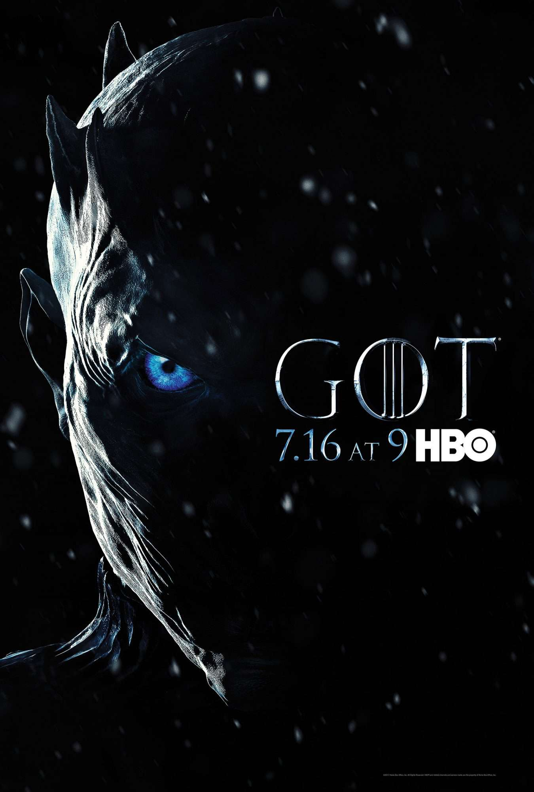

Season 1: The Seeds of Conflict
-
Eddard Stark becomes Hand of the King and uncovers Cersei and
Jaime’s secret relationship.
-
Bran Stark survives an assassination attempt after witnessing Jaime
and Cersei’s incest.
-
Daenerys Targaryen marries Khal Drogo and begins her transformation
into a leader.
-
Jon Snow joins the Night’s Watch and encounters the first signs of
the White Walker threat.
-
King Robert Baratheon dies, and Joffrey takes the throne, leading to
Ned Stark’s execution.
-
Robb Stark starts a war against the Lannisters to avenge his father.
-
Daenerys hatches three dragons after Khal Drogo’s death, emerging as
a powerful figure.
Season 2: The War of the Five Kings
-
Robb Stark continues his campaign against the Lannisters but faces
internal conflicts.
-
Stannis Baratheon declares himself king and is supported by the
priestess Melisandre.
-
Theon Greyjoy betrays the Starks and takes Winterfell, but his
forces are defeated.
-
Tyrion Lannister proves his strategic abilities during the Battle of
Blackwater Bay.
-
Arya Stark begins her journey of survival after escaping King’s
Landing.
-
Daenerys seeks alliances in Qarth, recovering her stolen dragons and
solidifying her leadership.
-
Jon Snow infiltrates the Wildlings and learns more about the White
Walkers.
Season 3: Betrayals and Shocks
-
The Red Wedding sees the brutal deaths of Robb Stark, Catelyn Stark,
and their forces.
-
Daenerys liberates the Unsullied in Astapor, gaining an army and
followers.
-
The Lannisters strengthen their hold with strategic marriages
arranged by Tywin.
-
Jaime Lannister begins a path to redemption after losing his hand
while traveling with Brienne.
-
Arya Stark aligns briefly with the Brotherhood Without Banners and
the Hound.
-
Jon Snow struggles between his loyalty to the Night’s Watch and his
love for Ygritte.
-
Bran Stark discovers his warging abilities and journeys to find the
Three-Eyed Raven.
Season 4: Vengeance and Chaos
-
Joffrey Baratheon is poisoned at his wedding, leading to Tyrion
being accused of murder.
-
Tyrion escapes prison with Jaime’s help, killing Tywin and Shae
before fleeing King's Landing.
-
The Wildlings attack the Wall, but Jon Snow defends it with great
leadership.
-
Arya Stark parts ways with the Hound and begins her journey to
Braavos.
-
Daenerys conquers Meereen but faces rebellion from the Sons of the
Harpy.
-
The White Walkers reveal their ability to turn humans into wights,
showcasing their growing power.
Season 5: The Fall of Leaders
-
Daenerys struggles to maintain control over Meereen amidst rebellion
and political unrest.
-
Jon Snow becomes Lord Commander of the Night’s Watch and allies with
the Wildlings.
-
Cersei faces humiliation during her walk of atonement after being
imprisoned by the Faith Militant.
- Arya begins her training with the Faceless Men in Braavos.
-
Stannis Baratheon sacrifices his daughter, Shireen, but is
ultimately defeated in battle.
-
The Night’s Watch betrays and murders Jon Snow, leaving his fate
uncertain.
Season 6: Resurrection and Revenge
-
Jon Snow is resurrected by Melisandre and reclaims Winterfell from
Ramsay Bolton in the Battle of the Bastards.
-
Sansa Stark emerges as a leader after enduring hardships with
Ramsay.
-
Cersei destroys the Sept of Baelor with wildfire, eliminating her
enemies but losing her son, Tommen.
-
Daenerys gains a fleet and allies as she prepares to sail to
Westeros.
-
Bran Stark discovers the origin of the White Walkers and becomes the
Three-Eyed Raven.
-
Arya Stark avenges the Red Wedding by killing Walder Frey and his
sons.
Season 7: The War Against the Dead
-
Jon Snow and Daenerys meet, forging an alliance against the White
Walkers.
-
The Night King breaches the Wall with an undead dragon, advancing
his army into Westeros.
-
Cersei refuses to commit to the fight against the undead, focusing
on her own power.
-
Bran reveals Jon’s true parentage: he is Aegon Targaryen, heir to
the Iron Throne.
-
Arya and Sansa unite against Littlefinger, executing him for his
manipulations.

Season 8: The Endgame
-
The Battle of Winterfell sees the defeat of the Night King and his
undead army, but at great cost.
-
Daenerys turns destructive, burning King’s Landing and its civilians
in her quest for power.
-
Jon Snow kills Daenerys to prevent further tyranny, ending her
reign.
-
Bran Stark is chosen as King of Westeros, while Sansa rules the
North as an independent kingdom.
-
Jon is exiled to the Night’s Watch, and Arya ventures west of
Westeros to explore unknown lands.